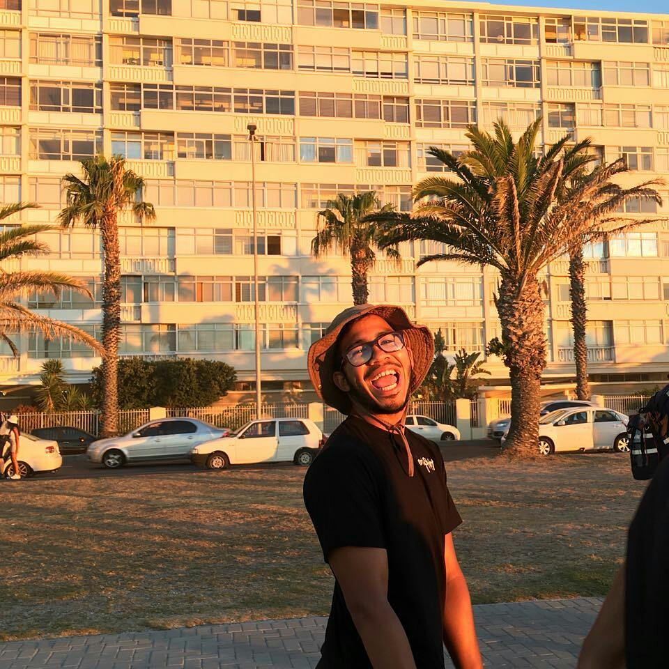

My name is Moegamat-Nur Brock. I am 23 years old. I reside in the area called Kensington. The area I come from is crime ridden , yet I came outdifferent.I love playing football. It has always been a passion of mine. I wanted to become a professional player but life turned out differently. I have a never give up attitude. Something Lion like. no matter what adversity came my way, I always over-came it.
I've always been the "Black Sheep" in my family. The different one. Always getting beaten up for something i've done. big or small. This made me mentally strong. It also made me physically tough. It hit me mentally though.Ialways thought that "getting back" at people was the right way. giving the what they gave me because of my abusive past but I only have myself to blame, right? I never seemed to comfide to what society wanted from me. maybe thats what set me apart from the others. On the brink of joining a gang (the 26's, Junky Funkies) because I felt that I was never good enough for family or friends but my life flashed in front of me,my mother. My mother was the one who never gave up on me. despite me being me, the naughty ,disrespectfil and heartless young kid i was, she never gave up. She always told me that there was a pot of gold at the end of the rainbow. After 23 years, I finally understand what She meant. Despite failing countless times in my life, She still showed faith in me. Failing 2 years of high school and getting fired from two good jobs was enough for me to jump off a bridge (dont worry, I am scared of heights) but she pushed me through.
Today I can say that I am strong. I wont let any adversity get in the way of my goals and vision for the future. I've done and been through so many things to have enough exprience about life whenn i've only lived a 1/4 of it. who knows if i'll be alive after this? but i lived my best life afterall I have so many things to be grateful for. My health, my family, and a roof over my head. I might not have the most money or things that many people have, but I have love from surroundings. who needs more? thats happiness.
in conclusion, Life is like an arrow, it needs to be pulled back before it slingshots in a certain direction. so when life pulls you back, know that you are going to slingshot forward
I was always intrigued on how computers and technology.my Father does IT and from a young age i wanted to learn nut he never had the time. I went to a technical school on the hopes to do electrical and computers but for financial reasons, I could not persue this field. When i found out about thid course, i jumped right in.
Well, I feel like I would be an asset to the world with my hard working attitude and hunger to learn